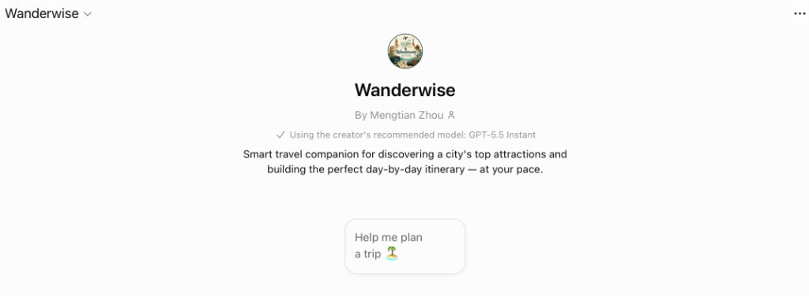

Artifact
Wanderwise Travel Planner
Wanderwise is a custom travel-planning assistant (a purpose-built GPT). Its specialty is helping travelers discover the most popular points of interest in any city and turning them into a practical, well-paced, day-by-day itinerary tailored to their interests, time, and travel style.
Ideas and Insights
The initial idea for Wanderwise came from how I usually plan trips. I realized that the biggest challenge is not finding information but filtering it. Travelers often open many websites, blogs, and videos, yet still struggle to decide what is actually worth visiting — so I wanted to create a chatbot that gathers and filters attraction info for them.
On top of that, people naturally describe their travel style with phrases like "relaxed," "not packed," or "I just want to see the highlights." Instead of asking users to configure many settings, the assistant should understand these natural descriptions and adapt the itinerary accordingly.
Decisions and Rationales
- Always ask for a destination before planning, since an itinerary can't be created without knowing where the user wants to go.
- Limit the conversation to two to four questions so it never feels like filling out a survey.
- Present six to ten genuinely popular attractions before building the itinerary, so users can customize the plan instead of receiving a fixed schedule.
- Require meal breaks, rest stops, and realistic travel times, because a practical itinerary is more valuable than one that simply crams in as many attractions as possible.
Iterations
Wanderwise evolved through several iterations. My first design generated an itinerary immediately after collecting a few preferences, but users had no chance to choose which attractions interested them most. I revised the flow so Wanderwise first presents a list of the most popular attractions, then asks users to select the ones they want before generating the itinerary.
I also improved the presentation by showing an image with each attraction rather than placing all images at the beginning, making the recommendations easier to browse. After testing, I refined the prompts to feel more natural — removing rigid step titles and using a friendlier, more conversational style.
Challenges and Solutions
One challenge was balancing personalization with simplicity. Asking too many questions produced better recommendations but made the interaction feel slow, while asking too few led to generic itineraries. I addressed this by collecting only the most important information and inferring reasonable defaults whenever possible.
Another challenge was keeping itineraries realistic rather than overly ambitious. I added rules that group nearby attractions, include meal and coffee breaks, and adjust the number of attractions based on the user's preferred pace. Finally, I added guardrails instructing the assistant not to invent attraction details, prices, or opening hours, and instead rely on current information or clearly tell users when to verify those details themselves.
Try it

Just name a city — and, if you know them, your trip length and interests — and Wanderwise takes it from there.